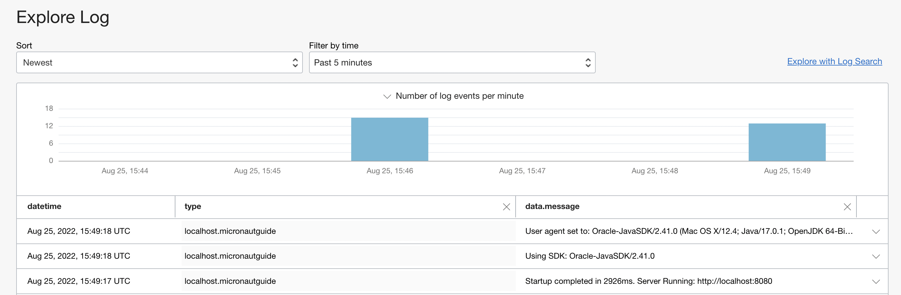
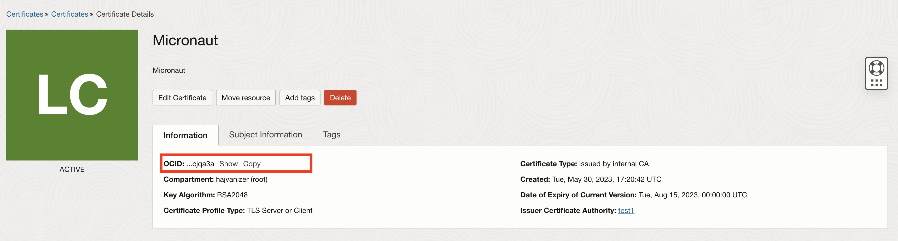

implementation("io.micronaut.oraclecloud:micronaut-oraclecloud-sdk:3.0.1-SNAPSHOT")Table of Contents
Micronaut Oracle Cloud
Provides integration between Micronaut and Oracle Cloud
Version:
1 Introduction
This module provides integration between Micronaut and the Oracle Cloud Infrastructure (OCI) SDK by giving you the ability to easily inject SDK clients into your Micronaut services and controllers. In addition to supporting the SDK’s blocking clients, the module provides reactive clients that use RxJava to provide async alternatives to the blocking clients in the SDK (an improvement upon the SDK’s 'out-of-the-box' async clients). This module also includes support for Oracle Cloud (serverless) Functions and Oracle Cloud Autonomous Database.
2 Release History
For this project, you can find a list of releases (with release notes) here:
3 Breaking Changes
This section will document breaking changes that may happen during milestone or release candidate releases, as well as major releases eg (1.x.x → 2.x.x).
Micronaut Oracle Cloud 2.2.0 breaking changes
In version 2.33.0, Oracle removed some dependencies from their Oracle Cloud SDK. If you relied on those dependencies being available, but did not declare them in your build file explicitly, they may now be missing. The solution is to add those dependencies to your own build file.
In general, we do not recommend depending on transitive dependencies of the Oracle Cloud SDK, as future versions may remove further dependencies.
The affected dependencies for this release are commons-codec, commons-io, and commons-logging.
4 Quick Start
To get started quickly, setup the Oracle Cloud CLI making sure you have run oci setup config to configure local access to Oracle Cloud.
Then add a dependency on the micronaut-oraclecloud-sdk module:
<dependency>
<groupId>io.micronaut.oraclecloud</groupId>
<artifactId>micronaut-oraclecloud-sdk</artifactId>
<version>3.0.1-SNAPSHOT</version>
</dependency>followed by adding dependencies on the OCI SDK clients you wish to use, for example for Vault:
implementation("io.micronaut.oraclecloud:micronaut-oraclecloud-bmc-vault")<dependency>
<groupId>io.micronaut.oraclecloud</groupId>
<artifactId>micronaut-oraclecloud-bmc-vault</artifactId>
</dependency>All OCI SDK clients are supported.
5 Authentication
The following authentication providers are supported in this module:
ConfigFileAuthenticationDetailsProvider
ConfigFileAuthenticationDetailsProvider uses a config file located at $USER_HOME/.oci/config. Specify a profile or config file path within the config file via your application configuration file:
oci.config.profile=DEFAULT
oci.config.path=/custom/path/to/config/fileoci:
config:
profile: DEFAULT
path: /custom/path/to/config/file[oci]
[oci.config]
profile="DEFAULT"
path="/custom/path/to/config/file"oci {
config {
profile = "DEFAULT"
path = "/custom/path/to/config/file"
}
}{
oci {
config {
profile = "DEFAULT"
path = "/custom/path/to/config/file"
}
}
}{
"oci": {
"config": {
"profile": "DEFAULT",
"path": "/custom/path/to/config/file"
}
}
}
In the Oracle Java SDK the environment variable OCI_CONFIG_FILE doesn’t take precedence over the ~/.oci/config if the file exists. Assign the OCI_CONFIG_FILE to oci.config.path. To change the order: oci.config.path: ${OCI_CONFIG_FILE}
|
SimpleAuthenticationDetailsProvider
SimpleAuthenticationDetailsProvider lets you provide config details via standard Micronaut configuration files.
oci.fingerprint=<value>
oci.passphrase=<value>
oci.private-key=<value>
oci.private-key-file=<value>
oci.region=<value>
oci.tenant-id=<value>
oci.user-id=<value>oci:
fingerprint: <value>
passphrase: <value>
private-key: <value>
private-key-file: <value>
region: <value>
tenant-id: <value>
user-id: <value>[oci]
fingerprint="<value>"
passphrase="<value>"
private-key="<value>"
private-key-file="<value>"
region="<value>"
tenant-id="<value>"
user-id="<value>"oci {
fingerprint = "<value>"
passphrase = "<value>"
privateKey = "<value>"
privateKeyFile = "<value>"
region = "<value>"
tenantId = "<value>"
userId = "<value>"
}{
oci {
fingerprint = "<value>"
passphrase = "<value>"
private-key = "<value>"
private-key-file = "<value>"
region = "<value>"
tenant-id = "<value>"
user-id = "<value>"
}
}{
"oci": {
"fingerprint": "<value>",
"passphrase": "<value>",
"private-key": "<value>",
"private-key-file": "<value>",
"region": "<value>",
"tenant-id": "<value>",
"user-id": "<value>"
}
}-
fingerprint: the private key fingerprint] -
passphrase: the private key passphrase] -
private-key: the contents of your private key. Optionally, pass a path with private-key-file (see below).] -
private-key-file: the path to the private key file (used in place of private-key above)] -
region: e.g. us-phoenix-1 -
tenant-id: the tenancy OCID -
user-id: the user OCID
InstancePrincipalsAuthenticationDetailsProvider
If your application is running in Oracle Cloud, you can authorize InstancePrincipalsAuthenticationDetailsProvider to make SDK calls and utilize Instance Principal authentication. See the documentation to enable this via dynamic groups and policies, and then enable it for the Oracle Cloud environment via the application-oraclecloud configuration file with:
oci.config.instance-principal.enabled=trueoci:
config:
instance-principal:
enabled: true[oci]
[oci.config]
[oci.config.instance-principal]
enabled=trueoci {
config {
instancePrincipal {
enabled = true
}
}
}{
oci {
config {
instance-principal {
enabled = true
}
}
}
}{
"oci": {
"config": {
"instance-principal": {
"enabled": true
}
}
}
}ResourcePrincipalAuthenticationDetailsProvider
ResourcePrincipalAuthenticationDetailsProvider is similar to instance principals, but used for Oracle Functions (serverless). See the documentation for instructions on how to configure the necessary dynamic group rules and policies to use Resource Principal auth with your serverless functions. Once the proper configuration is complete, your Micronaut driven serverless functions will be able to use the OCI SDKs.
6 Available Modules
The following modules are provided.
micronaut-oraclecloud-common
implementation("io.micronaut.oraclecloud:micronaut-oraclecloud-common:3.0.1-SNAPSHOT")<dependency>
<groupId>io.micronaut.oraclecloud</groupId>
<artifactId>micronaut-oraclecloud-common</artifactId>
<version>3.0.1-SNAPSHOT</version>
</dependency>Provides the common functionality and sets up the following beans:
-
BasicAuthenticationDetailsProvider - Authentication details auto-detected from local
$USER/.oci/configor environment -
ClientConfiguration - Common configuration for all clients
-
TenancyIdProvider - Interface to resolve current tenancy
micronaut-oraclecloud-httpclient-netty
implementation("io.micronaut.oraclecloud:micronaut-oraclecloud-httpclient-netty")<dependency>
<groupId>io.micronaut.oraclecloud</groupId>
<artifactId>micronaut-oraclecloud-httpclient-netty</artifactId>
</dependency>Provides an implementation of the OCI SDK client based on Netty and Micronaut Serialization.
micronaut-oraclecloud-sdk
implementation("io.micronaut.oraclecloud:micronaut-oraclecloud-sdk")<dependency>
<groupId>io.micronaut.oraclecloud</groupId>
<artifactId>micronaut-oraclecloud-sdk</artifactId>
</dependency>Provides support for injecting any of the available SDK client interfaces.
| This module does not have a dependency on any one module. You should add these to your project as needed. For example to use Object Vault you would define a dependency on this module as well as: |
implementation("io.micronaut.oraclecloud:micronaut-oraclecloud-bmc-vault")<dependency>
<groupId>io.micronaut.oraclecloud</groupId>
<artifactId>micronaut-oraclecloud-bmc-vault</artifactId>
</dependency>micronaut-oraclecloud-sdk-rxjava2
implementation("io.micronaut.oraclecloud:micronaut-oraclecloud-sdk-rxjava2")<dependency>
<groupId>io.micronaut.oraclecloud</groupId>
<artifactId>micronaut-oraclecloud-sdk-rxjava2</artifactId>
</dependency>Provides support for injecting inject RxJava 2 client implementations.
| This module does not have a dependency on any one module. You should add these to your project as needed. For example to use Object Vault you would define a dependency on this module as well as: |
implementation("io.micronaut.oraclecloud:micronaut-oraclecloud-bmc-vault")<dependency>
<groupId>io.micronaut.oraclecloud</groupId>
<artifactId>micronaut-oraclecloud-bmc-vault</artifactId>
</dependency>micronaut-oraclecloud-sdk-reactor
implementation("io.micronaut.oraclecloud:micronaut-oraclecloud-sdk-reactor")<dependency>
<groupId>io.micronaut.oraclecloud</groupId>
<artifactId>micronaut-oraclecloud-sdk-reactor</artifactId>
</dependency>Provides support for injecting inject Reactor client implementations.
| This module does not have a dependency on any one module. You should add these to your project as needed. For example to use Object Vault you would define a dependency on this module as well as: |
implementation("io.micronaut.oraclecloud:micronaut-oraclecloud-bmc-vault")<dependency>
<groupId>io.micronaut.oraclecloud</groupId>
<artifactId>micronaut-oraclecloud-bmc-vault</artifactId>
</dependency>micronaut-oraclecloud-function
implementation("io.micronaut.oraclecloud:micronaut-oraclecloud-function")<dependency>
<groupId>io.micronaut.oraclecloud</groupId>
<artifactId>micronaut-oraclecloud-function</artifactId>
</dependency>Provides the OciFunction superclass that you can subclass to write Oracle Cloud Functions in Micronaut that can utilize Micronaut dependency injection.
micronaut-oraclecloud-function-http
implementation("io.micronaut.oraclecloud:micronaut-oraclecloud-function-http")<dependency>
<groupId>io.micronaut.oraclecloud</groupId>
<artifactId>micronaut-oraclecloud-function-http</artifactId>
</dependency>Provides the HttpFunction class that can be used as a handler to write HTTP API Gateway function handlers that delegate to regular Micronaut controllers.
micronaut-oraclecloud-atp
implementation("io.micronaut.oraclecloud:micronaut-oraclecloud-atp")<dependency>
<groupId>io.micronaut.oraclecloud</groupId>
<artifactId>micronaut-oraclecloud-atp</artifactId>
</dependency>Provides support for configuring the data source connection for the UCP and HikariCP connection pools by specifying Oracle Cloud Autonomous Database configuration.
| The module generates the OracleWallet on startup. |
micronaut-oraclecloud-micrometer
implementation("io.micronaut.oraclecloud:micronaut-oraclecloud-micrometer")<dependency>
<groupId>io.micronaut.oraclecloud</groupId>
<artifactId>micronaut-oraclecloud-micrometer</artifactId>
</dependency>Provides support for sending Micrometer metrics to the Oracle Cloud Monitoring service.
micronaut-oraclecloud-vault
implementation("io.micronaut.oraclecloud:micronaut-oraclecloud-vault")<dependency>
<groupId>io.micronaut.oraclecloud</groupId>
<artifactId>micronaut-oraclecloud-vault</artifactId>
</dependency>Provides support for Distributed Configuration with Oracle Cloud Vault service.
7 OCI SDK Netty HTTP Client
This module provides a netty client implementation for the Java OCI SDK. The client uses Micronaut Serialization.
Add a dependency to the micronaut-oraclecloud-httpclient-netty module:
implementation("io.micronaut.oraclecloud:micronaut-oraclecloud-httpclient-netty")<dependency>
<groupId>io.micronaut.oraclecloud</groupId>
<artifactId>micronaut-oraclecloud-httpclient-netty</artifactId>
</dependency>For serialization to work correctly, use one of the micronaut OCI SDK modules instead of the OCI SDK modules. For example, for Object Store define the dependency:
implementation("io.micronaut.oraclecloud:micronaut-oraclecloud-bmc-objectstorage")<dependency>
<groupId>io.micronaut.oraclecloud</groupId>
<artifactId>micronaut-oraclecloud-bmc-objectstorage</artifactId>
</dependency>Migrate
Replace the com.oracle.oci.sdk:oci-java-sdk-common-httpclient-jersey with the micronaut-oraclecloud-httpclient-netty client and the com.oracle.oci.sdk:oci-java-sdk-bom with micronaut-oraclecloud-bom.
Then replace other OCI SDK modules with micronaut ones. To simplify the process, you can utilize the following regular expression:
For Maven replace
<dependency>(\s*)<groupId>com.oracle.oci.sdk</groupId>(\s*)<artifactId>oci-java-sdk-([^<]+)</artifactId>(((?!</dependency>)[\s\S])+)</dependency>with
<dependency>$1<groupId>io.micronaut.oraclecloud</groupId>$2<artifactId>micronaut-oraclecloud-bmc-$3</artifactId>$4</dependency>For Gradle replace
com.oracle.oci.sdk:oci-java-sdk-([^:"')]+)with
io.micronaut.oraclecloud:micronaut-oraclecloud-bmc-$1If you plan to use the modules in a Micronaut application, add one of the micronaut-oraclecloud-sdk, micronaut-oraclecloud-sdk-rxjava2 or micronaut-oraclecloud-sdk-reactor modules.
8 Reactive Support
In addition to the blocking clients, this module provides clients that use RxJava or Reactor to allow reactive programming with Micronaut for each SDK.
For RxJava 2 add the following module:
implementation("io.micronaut.oraclecloud:micronaut-oraclecloud-sdk-rxjava2:{ociVersion}")<dependency>
<groupId>io.micronaut.oraclecloud</groupId>
<artifactId>micronaut-oraclecloud-sdk-rxjava2</artifactId>
<version>{ociVersion}</version>
</dependency>For Reactor add:
implementation("io.micronaut.oraclecloud:micronaut-oraclecloud-sdk-reactor:{ociVersion}")<dependency>
<groupId>io.micronaut.oraclecloud</groupId>
<artifactId>micronaut-oraclecloud-sdk-reactor</artifactId>
<version>{ociVersion}</version>
</dependency>| You need to add the relevant OCI SDK dependency to use these clients. |
For example, instead of ObjectStorageClient, you can inject ObjectStorageRxClient for RxJava 2 or ObjectStorageReactorClient for Reactor to use the Object Storage API:
import com.oracle.bmc.objectstorage.model.BucketSummary;
import com.oracle.bmc.objectstorage.model.CreateBucketDetails;
import com.oracle.bmc.objectstorage.requests.CreateBucketRequest;
import com.oracle.bmc.objectstorage.requests.DeleteBucketRequest;
import com.oracle.bmc.objectstorage.requests.GetNamespaceRequest;
import com.oracle.bmc.objectstorage.requests.ListBucketsRequest;
import com.oracle.bmc.objectstorage.responses.CreateBucketResponse;
import io.micronaut.core.annotation.Nullable;
import io.micronaut.http.annotation.Controller;
import io.micronaut.http.annotation.Delete;
import io.micronaut.http.annotation.Get;
import io.micronaut.http.annotation.PathVariable;
import io.micronaut.http.annotation.Post;
import io.micronaut.oraclecloud.clients.reactor.objectstorage.ObjectStorageReactorClient;
import io.micronaut.oraclecloud.core.TenancyIdProvider;
import reactor.core.publisher.Mono;
import java.util.List;
import java.util.stream.Collectors;
@Controller("/os")
public class BucketController implements BucketOperations {
private final ObjectStorageReactorClient objectStorage;
private final TenancyIdProvider tenancyIdProvider;
private final String defaultCompartmentId = System.getenv("COMPARTMENT_OCID");
public BucketController(ObjectStorageReactorClient objectStorage,
TenancyIdProvider tenancyIdProvider) { // (1)
this.objectStorage = objectStorage;
this.tenancyIdProvider = tenancyIdProvider;
}
}import com.oracle.bmc.objectstorage.model.CreateBucketDetails
import com.oracle.bmc.objectstorage.requests.CreateBucketRequest
import com.oracle.bmc.objectstorage.requests.DeleteBucketRequest
import com.oracle.bmc.objectstorage.requests.GetNamespaceRequest
import com.oracle.bmc.objectstorage.requests.ListBucketsRequest
import com.oracle.bmc.objectstorage.responses.CreateBucketResponse
import groovy.transform.CompileStatic
import io.micronaut.core.annotation.Nullable
import io.micronaut.http.annotation.Controller
import io.micronaut.http.annotation.Delete
import io.micronaut.http.annotation.Get
import io.micronaut.http.annotation.PathVariable
import io.micronaut.http.annotation.Post
import io.micronaut.oraclecloud.clients.reactor.objectstorage.ObjectStorageReactorClient
import io.micronaut.oraclecloud.core.TenancyIdProvider
import reactor.core.publisher.Mono
@CompileStatic
@Controller('/os')
class BucketController implements BucketOperations {
private final ObjectStorageReactorClient objectStorage
private final TenancyIdProvider tenancyIdProvider
BucketController(ObjectStorageReactorClient objectStorage,
TenancyIdProvider tenancyIdProvider) { // (1)
this.objectStorage = objectStorage
this.tenancyIdProvider = tenancyIdProvider
}
}import io.micronaut.oraclecloud.clients.reactor.objectstorage.ObjectStorageReactorClient
import io.micronaut.oraclecloud.core.TenancyIdProvider
import io.micronaut.http.annotation.Get
import io.micronaut.http.annotation.PathVariable
import com.oracle.bmc.objectstorage.requests.ListBucketsRequest
import com.oracle.bmc.objectstorage.responses.ListBucketsResponse
import com.oracle.bmc.objectstorage.requests.CreateBucketRequest
import com.oracle.bmc.objectstorage.model.CreateBucketDetails
import com.oracle.bmc.objectstorage.responses.CreateBucketResponse
import com.oracle.bmc.objectstorage.requests.DeleteBucketRequest
import com.oracle.bmc.objectstorage.requests.GetNamespaceRequest
import com.oracle.bmc.objectstorage.responses.DeleteBucketResponse
import com.oracle.bmc.objectstorage.responses.GetNamespaceResponse
import io.micronaut.core.annotation.Nullable
import io.micronaut.http.annotation.Controller
import io.micronaut.http.annotation.Delete
import io.micronaut.http.annotation.Post
import reactor.core.publisher.Mono
@Controller("/os")
class BucketController(private val objectStorage: ObjectStorageReactorClient,
private val tenancyIdProvider: TenancyIdProvider) // (1)
: BucketOperations {
}| 1 | The ObjectStorageRxClient is injected into the constructor. |
Once you have a reference to the relevant reactive client, it is easier to compose non-blocking operations. The following example creates a bucket:
@Override
@Post(value = "/buckets/{name}")
public Mono<String> createBucket(String name) {
String compartmentId = defaultCompartmentId != null ? defaultCompartmentId : tenancyIdProvider.getTenancyId();
GetNamespaceRequest getNamespaceRequest = GetNamespaceRequest.builder()
.compartmentId(compartmentId).build();
return objectStorage.getNamespace(getNamespaceRequest) // (1)
.flatMap(namespaceResponse -> {
CreateBucketRequest createBucketRequest = CreateBucketRequest.builder()
.namespaceName(namespaceResponse.getValue())
.createBucketDetails(CreateBucketDetails.builder()
.compartmentId(compartmentId)
.name(name)
.build())
.build();
return objectStorage.createBucket(createBucketRequest) // (2)
.map(CreateBucketResponse::getLocation); // (3)
});
}@Override
@Post(value = '/buckets/{name}')
Mono<String> createBucket(String name) {
String tenancyId = tenancyIdProvider.tenancyId
GetNamespaceRequest getNamespaceRequest = GetNamespaceRequest.builder()
.compartmentId(tenancyId).build()
return objectStorage.getNamespace(getNamespaceRequest) // (1)
.flatMap(namespaceResponse -> {
CreateBucketRequest createBucketRequest = CreateBucketRequest.builder()
.namespaceName(namespaceResponse.value)
.createBucketDetails(CreateBucketDetails.builder()
.compartmentId(tenancyId)
.name(name)
.build())
.build()
return objectStorage.createBucket(createBucketRequest) // (2)
.map(CreateBucketResponse::getLocation) // (3)
}) as Mono<String>
}@Post(value = "/buckets/{name}")
override fun createBucket(name: String): Mono<String> {
val tenancyId = tenancyIdProvider.tenancyId
val getNamespaceRequest = GetNamespaceRequest.builder()
.compartmentId(tenancyId).build()
return objectStorage.getNamespace(getNamespaceRequest) // (1)
.flatMap { namespaceResponse: GetNamespaceResponse ->
val createBucketRequest = CreateBucketRequest.builder()
.namespaceName(namespaceResponse.value)
.createBucketDetails(CreateBucketDetails.builder()
.compartmentId(tenancyId)
.name(name)
.build())
.build()
objectStorage.createBucket(createBucketRequest) // (2)
.map { obj: CreateBucketResponse -> obj.location } // (3)
}
}| 1 | First a request to obtain the namespace is sent |
| 2 | Then with the response the flatMap operator is used to send another request to create a bucket |
| 3 | Finally the location of the bucket is returned in the response |
9 Oracle Functions (Serverless)
Oracle Functions are based on Project.fn. You can write simple functions targeting the Oracle Function environment by extending from the OciFunction superclass.
Micronaut’s Oracle Function support can utilize GraalVM native-image running within a Docker container. This will result in extremely responsive serverless functions utilizing very few Cloud resources.
|
This superclass enables dependency injection for the function. Note that the the function definition must conform to the following rules:
-
The class must have a public no arguments constructor
-
A public method that executes the function must be defined
-
The class must be annotated with
@Singleton
Micronaut support for Oracle Functions can be combined with the OCI SDK support to give your serverless functions access to the OCI SDKs as needed.
| You must have resource principal authentication properly configured in order for this example to work. |
Creating a Function with a Gradle build
With Micronaut 2.1 and above you can create a new Oracle Function using Gradle as the build tool with the following command line command:
$ mn create-function-app myfunction --features oracle-functionThis will create a Gradle build that sets up the Micronaut Gradle plugin. The only changes you need to make are to modify the build.gradle and alter the dockerBuild and dockerBuildNative to point at the Oracle Cloud Registry you wish the publish the docker images for the function:
dockerBuild {
images = ["[REGION].ocir.io/[TENANCY_ID]/[REPOSITORY]/$project.name:$project.version"]
}
dockerBuildNative {
images = ["[REGION].ocir.io/[TENANCY_ID]/[REPOSITORY]/$project.name:$project.version"]
}The REGION should be altered to your region, the TENANCY_ID to your tenancy and the REPOSITORY to the Docker repository you wish to publish to.
Creating a Function with a Maven build
With Micronaut 2.2 and above you can create a new Oracle Function using Maven as the build tool with the following command line command:
$ mn create-function-app myfunction --build=maven --features oracle-functionThis will create a Maven build that sets up the Micronaut Maven plugin. The only changes you need to make are to modify the pom.xml and and add these properties in the <properties> section to point at the Oracle Cloud Registry you wish the publish the docker images for the function:
<jib.docker.image>[REGION].ocir.io/[TENANCY_ID]/[REPOSITORY]/${project.artifactId}</jib.docker.image>
<jib.docker.tag>${project.version}</jib.docker.tag>The REGION should be altered to your region, the TENANCY_ID to your tenancy and the REPOSITORY to the Docker repository you wish to publish to.
Also add a property to define the full class name and package of the function class, e.g.
<exec.mainClass>com.mycompany.MyFunction</exec.mainClass>Build
The following provides a serverless function example that uses the Object Storage API to list the available buckets:
import com.oracle.bmc.objectstorage.ObjectStorageClient;
import com.oracle.bmc.objectstorage.model.BucketSummary;
import com.oracle.bmc.objectstorage.requests.GetNamespaceRequest;
import com.oracle.bmc.objectstorage.requests.ListBucketsRequest;
import io.micronaut.core.annotation.ReflectiveAccess;
import io.micronaut.oraclecloud.core.TenancyIdProvider;
import io.micronaut.oraclecloud.function.OciFunction;
import jakarta.inject.Inject;
import jakarta.inject.Singleton;
import java.util.List;
import java.util.stream.Collectors;
@Singleton
public class ListBucketsFunction extends OciFunction { // (1)
@Inject
ObjectStorageClient objectStorageClient; // (2)
@Inject
TenancyIdProvider tenantIdProvider;
}import com.oracle.bmc.objectstorage.ObjectStorageClient
import com.oracle.bmc.objectstorage.requests.GetNamespaceRequest
import com.oracle.bmc.objectstorage.requests.ListBucketsRequest
import groovy.transform.CompileStatic
import io.micronaut.core.annotation.ReflectiveAccess
import io.micronaut.oraclecloud.core.TenancyIdProvider
import io.micronaut.oraclecloud.function.OciFunction
import jakarta.inject.Inject
import jakarta.inject.Singleton
@CompileStatic
@Singleton
class ListBucketsFunction extends OciFunction { // (1)
@Inject
ObjectStorageClient objectStorageClient // (2)
@Inject
TenancyIdProvider tenantIdProvider
}import com.oracle.bmc.objectstorage.ObjectStorageClient
import com.oracle.bmc.objectstorage.requests.GetNamespaceRequest
import com.oracle.bmc.objectstorage.requests.ListBucketsRequest
import io.micronaut.core.annotation.ReflectiveAccess
import io.micronaut.oraclecloud.core.TenancyIdProvider
import io.micronaut.oraclecloud.function.OciFunction
import jakarta.inject.Inject
import jakarta.inject.Singleton
@Singleton
class ListBucketsFunction : OciFunction() { // (1)
@Inject
lateinit var objectStorageClient : ObjectStorageClient // (2)
@Inject
lateinit var tenantIdProvider: TenancyIdProvider
}| 1 | A public class with a no argument constructor annotated with @Singleton and extending from OciFunction |
| 2 | You can use the @Inject annotation to inject SDK components |
Once you have defined the function, define a public method that is the function handler, for example:
@ReflectiveAccess
public List<String> handleRequest() {
GetNamespaceRequest getNamespaceRequest = GetNamespaceRequest.builder()
.compartmentId(tenantIdProvider.getTenancyId()).build();
String namespace = objectStorageClient.getNamespace(getNamespaceRequest).getValue();
ListBucketsRequest listBucketsRequest = ListBucketsRequest.builder()
.namespaceName(namespace)
.compartmentId(tenantIdProvider.getTenancyId())
.build();
return objectStorageClient.listBuckets(listBucketsRequest)
.getItems().stream().map(BucketSummary::getName)
.collect(Collectors.toList());
}@ReflectiveAccess
List<String> handleRequest() {
GetNamespaceRequest getNamespaceRequest = GetNamespaceRequest.builder()
.compartmentId(tenantIdProvider.tenancyId).build()
String namespace = objectStorageClient.getNamespace(getNamespaceRequest).value
ListBucketsRequest listBucketsRequest = ListBucketsRequest.builder()
.namespaceName(namespace)
.compartmentId(tenantIdProvider.tenancyId)
.build()
return objectStorageClient.listBuckets(listBucketsRequest).items*.name
}@ReflectiveAccess
fun handleRequest(): List<String> {
val getNamespaceRequest = GetNamespaceRequest.builder()
.compartmentId(tenantIdProvider.tenancyId).build()
val namespace = objectStorageClient.getNamespace(getNamespaceRequest).value
val listBucketsRequest = ListBucketsRequest.builder()
.namespaceName(namespace)
.compartmentId(tenantIdProvider.tenancyId)
.build()
return objectStorageClient.listBuckets(listBucketsRequest)
.items.map { it.name }The above example uses the Object Storage API to list the available buckets.
Docker Build
To build the Oracle Function with Gradle, run the ./gradlew dockerBuild command or to build the GraalVM native image version run ./gradlew dockerBuildNative.
To build the Oracle Function with Maven, run the ./mvnw package -Dpackaging=docker command or to build the GraalVM native image version run ./mvnw package -Dpackaging=docker-native.
Deploy
To deploy the Oracle Function as a Java function with Gradle, run ./gradlew dockerPush to push the function to Oracle Container Registry, or to deploy the GraalVM native image version run ./gradlew dockerPushNative.
To deploy the Oracle Function as a Java function with Maven, run ./mvnw deploy -Dpackaging=docker to push the function to Oracle Container Registry, or to deploy the GraalVM native image version run ./mvnw deploy -Dpackaging=docker-native.
Note that these commands only publish the function to Oracle Container Registry. To make the function invokable, use the Oracle Cloud UI to create the function, or use the fn command line application to create the function from the container image:
Creating a Function from a Container Image
$ fn create function myapp myfunction [REGION].ocir.io/[TENANCY]/[REPOSITORY/[FUNCTION_NAME]:[FUNCTION_VERSION]
## For example:
$ fn create function myapp myfunction us-ashburn-1.ocir.io/mytenancy/myrepository/myfunction:1.0.0
For Java functions that do not use Native Image you will need to pass --memory 512 --timeout 120 as Java functions occupy more memory that native functions.
|
If you publish a new image using ./gradlew dockerPush or ./gradlew dockerPushNative (or with Maven using ./mvnw deploy -Dpackaging=docker or ./mvnw deploy -Dpackaging=docker-native) for an existing function you can also update it with fn update:
Updating an existing Function from a Container Image
$ fn update function myapp myfunction [REGION].ocir.io/[TENANCY]/[REPOSITORY/[FUNCTION_NAME]:[FUNCTION_VERSION]10 Oracle Functions HTTP (Serverless)
The micronaut-oraclecloud-function-http module gives you the ability to write HTTP API Gateway function handlers that delegate to regular Micronaut controllers.
Since Micronaut 2.1 you can create HTTP functions with a Gradle build using the command line or via Micronaut Launch:
Creating a new Function with the CLI
$ mn create-app myfunction --features oracle-functionSince Micronaut 2.2 you can create HTTP functions with a Maven build using the command line or via Micronaut Launch:
Creating a new Function with the CLI
$ mn create-app myfunction --build=maven --features oracle-functionYou can then create your controller just as you would a normal Micronaut controller.
import com.oracle.bmc.objectstorage.ObjectStorage;
import com.oracle.bmc.objectstorage.model.BucketSummary;
import com.oracle.bmc.objectstorage.model.CreateBucketDetails;
import com.oracle.bmc.objectstorage.model.ListObjects;
import com.oracle.bmc.objectstorage.model.ObjectSummary;
import com.oracle.bmc.objectstorage.requests.CreateBucketRequest;
import com.oracle.bmc.objectstorage.requests.DeleteBucketRequest;
import com.oracle.bmc.objectstorage.requests.GetNamespaceRequest;
import com.oracle.bmc.objectstorage.requests.ListBucketsRequest;
import com.oracle.bmc.objectstorage.requests.ListObjectsRequest;
import io.micronaut.core.annotation.Nullable;
import io.micronaut.core.util.CollectionUtils;
import io.micronaut.http.MediaType;
import io.micronaut.http.annotation.Controller;
import io.micronaut.http.annotation.Delete;
import io.micronaut.http.annotation.Get;
import io.micronaut.http.annotation.PathVariable;
import io.micronaut.http.annotation.Post;
import io.micronaut.http.annotation.QueryValue;
import io.micronaut.oraclecloud.core.TenancyIdProvider;
import java.util.List;
import java.util.Map;
import java.util.Optional;
import java.util.stream.Collectors;
@Controller("/os")
public class BucketController {
private final ObjectStorage objectStorage;
private final TenancyIdProvider tenancyIdProvider;
public BucketController(ObjectStorage objectStorage,
TenancyIdProvider tenancyIdProvider) { // (1)
this.objectStorage = objectStorage;
this.tenancyIdProvider = tenancyIdProvider;
}
}import com.oracle.bmc.objectstorage.ObjectStorage
import com.oracle.bmc.objectstorage.model.CreateBucketDetails
import com.oracle.bmc.objectstorage.model.ListObjects
import com.oracle.bmc.objectstorage.requests.CreateBucketRequest
import com.oracle.bmc.objectstorage.requests.DeleteBucketRequest
import com.oracle.bmc.objectstorage.requests.GetNamespaceRequest
import com.oracle.bmc.objectstorage.requests.ListBucketsRequest
import com.oracle.bmc.objectstorage.requests.ListObjectsRequest
import groovy.transform.CompileStatic
import io.micronaut.core.annotation.Nullable
import io.micronaut.http.MediaType
import io.micronaut.http.annotation.Controller
import io.micronaut.http.annotation.Delete
import io.micronaut.http.annotation.Get
import io.micronaut.http.annotation.PathVariable
import io.micronaut.http.annotation.Post
import io.micronaut.http.annotation.QueryValue
import io.micronaut.oraclecloud.core.TenancyIdProvider
@CompileStatic
@Controller('/os')
class BucketController {
private final ObjectStorage objectStorage
private final TenancyIdProvider tenancyIdProvider
BucketController(ObjectStorage objectStorage,
TenancyIdProvider tenancyIdProvider) { // (1)
this.objectStorage = objectStorage
this.tenancyIdProvider = tenancyIdProvider
}
}import com.oracle.bmc.objectstorage.ObjectStorage
import com.oracle.bmc.objectstorage.model.CreateBucketDetails
import com.oracle.bmc.objectstorage.requests.CreateBucketRequest
import com.oracle.bmc.objectstorage.requests.DeleteBucketRequest
import com.oracle.bmc.objectstorage.requests.GetNamespaceRequest
import com.oracle.bmc.objectstorage.requests.ListBucketsRequest
import com.oracle.bmc.objectstorage.requests.ListObjectsRequest
import io.micronaut.core.annotation.Nullable
import io.micronaut.http.MediaType
import io.micronaut.http.annotation.Controller
import io.micronaut.http.annotation.Delete
import io.micronaut.http.annotation.Get
import io.micronaut.http.annotation.PathVariable
import io.micronaut.http.annotation.Post
import io.micronaut.http.annotation.QueryValue
import io.micronaut.oraclecloud.core.TenancyIdProvider
import java.util.Optional
@Controller("/os")
class BucketController(private val objectStorage: ObjectStorage,
private val tenancyIdProvider: TenancyIdProvider) { // (1)
}| 1 | This example uses the micronaut-oraclecloud-sdk module to perform Object Storage operations, so the ObjectStorage client and TenancyIdProvider are injected. |
Next, add a controller method to list all of the buckets in a compartment:
@Get("/buckets{/compartmentId}")
public List<String> listBuckets(@PathVariable @Nullable String compartmentId) {
String compartmentOcid = compartmentId != null ? compartmentId : tenancyIdProvider.getTenancyId();
GetNamespaceRequest getNamespaceRequest = GetNamespaceRequest.builder()
.compartmentId(compartmentOcid).build();
String namespace = objectStorage.getNamespace(getNamespaceRequest).getValue();
ListBucketsRequest listBucketsRequest = ListBucketsRequest.builder()
.namespaceName(namespace)
.compartmentId(compartmentOcid)
.build();
return objectStorage.listBuckets(listBucketsRequest)
.getItems()
.stream()
.map(BucketSummary::getName)
.collect(Collectors.toList());
}@Get('/buckets{/compartmentId}')
List<String> listBuckets(@PathVariable @Nullable String compartmentId) {
String compartmentOcid = compartmentId ?: tenancyIdProvider.tenancyId
GetNamespaceRequest getNamespaceRequest = GetNamespaceRequest.builder()
.compartmentId(compartmentOcid).build()
String namespace = objectStorage.getNamespace(getNamespaceRequest).value
ListBucketsRequest listBucketsRequest = ListBucketsRequest.builder()
.namespaceName(namespace)
.compartmentId(compartmentOcid)
.build()
return objectStorage.listBuckets(listBucketsRequest).items*.name
}@Get("/buckets{/compartmentId}")
fun listBuckets(@PathVariable @Nullable compartmentId: String?): List<String> {
val compartmentOcid = compartmentId ?: tenancyIdProvider.tenancyId!!
val getNamespaceRequest = GetNamespaceRequest.builder()
.compartmentId(compartmentOcid).build()
val namespace = objectStorage.getNamespace(getNamespaceRequest).value
val listBucketsRequest = ListBucketsRequest.builder()
.namespaceName(namespace)
.compartmentId(compartmentOcid)
.build()
return objectStorage.listBuckets(listBucketsRequest).items
.map { it.name }
}Docker Build
To build the Oracle Function with Gradle, run the ./gradlew dockerBuild command or to build the native version run ./gradlew dockerBuildNative.
To build the Oracle Function with Maven, run the ./mvnw package -Dpackaging=docker command or to build the native version run ./mvnw package -Dpackaging=docker-native.
Deploy
To deploy your function follow the same instructions provided for regular Oracle Functions.
API Gateway
Once you have deployed your function you’ll need to create an API Gateway to route requests to your serverless deployment. The Micronaut router will call the proper controller function based on the incoming HTTP Request Method and the path.
First, create an API Gateway by selecting 'Developer Services', then 'API Gateway' from the Oracle Cloud console dashboard.

Click 'Create Gateway'.

Enter a name for the gateway, choose the compartment it is stored in, and the network and subnet.

When the gateway is Active, click Deployments, then Create Deployment.

Provide a name for the deployment and enter a "Path Prefix". If necessary, configure any Authentication, CORS, or Rate Limiting and click Next.
The path prefix must match the path you used in your controller (e.g. @Controller("/os")).
|

Enter route information.
-
Enter
/{path*}as the Path. This will capture all incoming requests and the Micronaut router will match the incoming path and request method with the proper controller method. -
Choose
ANYfor methods. Optionally, choose the necessary methods individually. -
Choose 'Oracle Functions' as the type.
-
Choose the appropriate Oracle Functions application.
-
Choose the function name that you used. This can be found in your function’s
func.yamlfile.

Click 'Next', then review the deployment details and click 'Create'.

Your new deployment will be listed in 'Creating' state.

When your new deployment becomes 'Active', click the deployment to view the deployment details. Copy the 'Endpoint' - this is the base URL that you’ll use for your function invocations.

Test your functions by appending the proper controller path and one of your controller endpoints.

11 Oracle Autonomous Database
Oracle Cloud Autonomous Database connection information and credentials are stored in the Oracle Wallet.
Micronaut can automatically generate and download the Wallet and configure the data source.
First you need the correct version of the Oracle Database driver and required modules. To ensure you are using the right version apply the 21.1.0.0 or above Oracle Database BOM with Gradle:
implementation platform("com.oracle.database.jdbc:ojdbc-bom:21.1.0.0")Or with Maven:
<dependencyManagement>
<dependencies>
<dependency>
<groupId>com.oracle.database.jdbc</groupId>
<artifactId>ojdbc-bom</artifactId>
<version>21.1.0.0</version>
<type>pom</type>
<scope>import</scope>
</dependency>
</dependencies>
</dependencyManagement>Secondly you need to add a dependency on the micronaut-oraclecloud-atp module:
runtimeOnly("io.micronaut.oraclecloud:micronaut-oraclecloud-atp")<dependency>
<groupId>io.micronaut.oraclecloud</groupId>
<artifactId>micronaut-oraclecloud-atp</artifactId>
<scope>runtime</scope>
</dependency>Then you must configure the authentication provider.
Then simply add a dependency to one of the Micronaut connection pool implementations.
| Automated configuration is currently supported only for the HikariCP and UCP connection pool. |
runtimeOnly("io.micronaut.sql:micronaut-jdbc-ucp")<dependency>
<groupId>io.micronaut.sql</groupId>
<artifactId>micronaut-jdbc-ucp</artifactId>
<scope>runtime</scope>
</dependency>Or:
runtimeOnly("io.micronaut.sql:micronaut-jdbc-hikari")<dependency>
<groupId>io.micronaut.sql</groupId>
<artifactId>micronaut-jdbc-hikari</artifactId>
<scope>runtime</scope>
</dependency>
Note that micronaut-oraclecloud-atp module is compatible with Java 11+.
|
To use automated data source configuration from the Wallet, provide a configuration similar to the following:
datasources.default.ocid=ocid1.autonomousdatabase.oc1.....
datasources.default.walletPassword=micronaut.1
datasources.default.username=foo
datasources.default.password=bardatasources:
default:
ocid: ocid1.autonomousdatabase.oc1.....
walletPassword: micronaut.1
username: foo
password: bar[datasources]
[datasources.default]
ocid="ocid1.autonomousdatabase.oc1....."
walletPassword="micronaut.1"
username="foo"
password="bar"datasources {
'default' {
ocid = "ocid1.autonomousdatabase.oc1....."
walletPassword = "micronaut.1"
username = "foo"
password = "bar"
}
}{
datasources {
default {
ocid = "ocid1.autonomousdatabase.oc1....."
walletPassword = "micronaut.1"
username = "foo"
password = "bar"
}
}
}{
"datasources": {
"default": {
"ocid": "ocid1.autonomousdatabase.oc1.....",
"walletPassword": "micronaut.1",
"username": "foo",
"password": "bar"
}
}
}-
ocidspecifies the autonomous database id -
walletPasswordencrypts the keys inside the wallet (at least eight characters long, includes at least one letter and either one numeric character or one special character) -
specify the database
usernameandpassword
The username and password are not automatically generated and must be created in advance.
|
Module uses <db_name>_high as a default service alias. This can be overriden with the serviceAlias property.
The wallet is of type SINGLE. Use the walletType property to configure different types. See other valid options at https://docs.oracle.com/en-us/iaas/api/#/en/database/20160918/datatypes/GenerateAutonomousDatabaseWalletDetails.
12 Micrometer Support For Oracle Monitoring
The OCI Monitoring service enables you to actively and passively monitor your cloud resources using the Metrics and Alarms features.
The micronaut-oraclecloud-micrometer module integrates Micronaut’s Micrometer support with the OCI Monitoring service.
To begin, first add the standard dependencies for the Micronaut Micrometer module per the documentation.
Next, add a dependency on the micronaut-oraclecloud-micrometer module:
runtimeOnly("io.micronaut.oraclecloud:micronaut-oraclecloud-micrometer")<dependency>
<groupId>io.micronaut.oraclecloud</groupId>
<artifactId>micronaut-oraclecloud-micrometer</artifactId>
<scope>runtime</scope>
</dependency>Don’t forget to add a dependency for the OCI SDK Monitoring module:
implementation("com.oracle.oci.sdk:oci-java-sdk-monitoring")<dependency>
<groupId>com.oracle.oci.sdk</groupId>
<artifactId>oci-java-sdk-monitoring</artifactId>
</dependency>Then configure the authentication provider.
You can configure this Micrometer reporter using micronaut.metrics.export.oraclecloud. The most commonly changed configuration properties are listed below:
Name |
Description |
enabled |
Whether to enable the reporter. Could disable to local dev for example. Default: |
applicationName |
Application name used as a common dimension. Default: |
namespace |
Metrics namespace. Required. |
resourceGroup |
Metrics resource group. |
compartmentId |
Oracle Cloud compartment id. Default: the Oracle SDK tenantId. |
step |
How frequently to report metrics. Default: |
batchSize |
How many metrics send in one batch. Default: |
descriptions |
Boolean if meter descriptions should be sent to InfluxDB. Turn this off to minimize the amount of data sent on each scrape. Default: |
Example Oracle Cloud Config
micronaut.metrics.enabled=true
micronaut.metrics.export.oraclecloud.enabled=true
micronaut.metrics.export.oraclecloud.namespace=test
micronaut.metrics.export.oraclecloud.resourceGroup=foomicronaut:
metrics:
enabled: true
export:
oraclecloud:
enabled: true
namespace: test
resourceGroup: foo[micronaut]
[micronaut.metrics]
enabled=true
[micronaut.metrics.export]
[micronaut.metrics.export.oraclecloud]
enabled=true
namespace="test"
resourceGroup="foo"micronaut {
metrics {
enabled = true
export {
oraclecloud {
enabled = true
namespace = "test"
resourceGroup = "foo"
}
}
}
}{
micronaut {
metrics {
enabled = true
export {
oraclecloud {
enabled = true
namespace = "test"
resourceGroup = "foo"
}
}
}
}
}{
"micronaut": {
"metrics": {
"enabled": true,
"export": {
"oraclecloud": {
"enabled": true,
"namespace": "test",
"resourceGroup": "foo"
}
}
}
}
}13 OCI Application Performance Monitoring as a Tracing Endpoint
You can use OCI Application Performance Monitoring (APM) as a drop-in replacement for Tracing in your Micronaut Applications.
OCI APM is a suite of services that give you insight into your applications and servers running in OCI via a small agent that runs on the machine and aggregates and reports metric data. It’s a nice service to monitor and diagnose performance issues. It also includes a Trace Explorer that is Zipkin (and Jaeger) compatible which we can use from our Micronaut applications (even without taking full advantage of APM via the Java Agent).
Add Dependencies
Micronaut Management
implementation("io.micronaut:micronaut-management")<dependency>
<groupId>io.micronaut</groupId>
<artifactId>micronaut-management</artifactId>
</dependency>Micronaut Tracing
implementation("io.micronaut:micronaut-tracing")<dependency>
<groupId>io.micronaut</groupId>
<artifactId>micronaut-tracing</artifactId>
</dependency>Brave Instrumentation
runtimeOnly("io.zipkin.brave:brave-instrumentation-http")<dependency>
<groupId>io.zipkin.brave</groupId>
<artifactId>brave-instrumentation-http</artifactId>
<scope>runtime</scope>
</dependency>Zipkin Reporter
runtimeOnly("io.zipkin.reporter2:zipkin-reporter")<dependency>
<groupId>io.zipkin.reporter2</groupId>
<artifactId>zipkin-reporter</artifactId>
<scope>runtime</scope>
</dependency>Open Tracing
implementation("io.opentracing.brave:brave-opentracing")<dependency>
<groupId>io.opentracing.brave</groupId>
<artifactId>brave-opentracing</artifactId>
</dependency>Create APM Domain
Now, create an APM domain in the OCI console. We’ll share a single domain to group and trace all of our services.
That may seem a bit confusing given the name "domain", but think of it more like a "project group" or an "environment" (you may want to create separate domains for QA, Test, Prod, etc.).
Search for Application Performance Monitoring and click Administration.

In the left sidebar, click APM Domains.

Click Create APM Domain.

Name it, choose a compartment, and enter a description.

Once the domain is created, view the domain details. Here you’ll need to grab a few values, so copy the data upload endpoint (#1), private key (#2), and public key (#3).

Now we have what we need to construct a URL to plug in to our application configuration files.
The Collector URL format requires us to construct a URL by using the data upload endpoint as our base URL and generate the path based on some choices including values from our private or public key.
The format is documented here.
Once we’ve constructed the URL path, we can add it to our application-oraclecloud configuration file.
Example Oracle Cloud Config
micronaut.application.name=demo2
tracing.zipkin.enabled=true
tracing.zipkin.sampler.probability=1
tracing.zipkin.http.url=https://[redacted].apm-agt.us-phoenix-1.oci.oraclecloud.com
tracing.zipkin.http.path=/20200101/observations/public-span?dataFormat=zipkin&dataFormatVersion=2&dataKey=[public key]
tracing.zipkin.supportsJoin=falsemicronaut:
application:
name: demo2
tracing:
zipkin:
enabled: true
sampler:
probability: 1
http:
url: https://[redacted].apm-agt.us-phoenix-1.oci.oraclecloud.com
path: /20200101/observations/public-span?dataFormat=zipkin&dataFormatVersion=2&dataKey=[public key]
supportsJoin: false[micronaut]
[micronaut.application]
name="demo2"
[tracing]
[tracing.zipkin]
enabled=true
[tracing.zipkin.sampler]
probability=1
[tracing.zipkin.http]
url="https://[redacted].apm-agt.us-phoenix-1.oci.oraclecloud.com"
path="/20200101/observations/public-span?dataFormat=zipkin&dataFormatVersion=2&dataKey=[public key]"
supportsJoin=falsemicronaut {
application {
name = "demo2"
}
}
tracing {
zipkin {
enabled = true
sampler {
probability = 1
}
http {
url = "https://[redacted].apm-agt.us-phoenix-1.oci.oraclecloud.com"
path = "/20200101/observations/public-span?dataFormat=zipkin&dataFormatVersion=2&dataKey=[public key]"
}
supportsJoin = false
}
}{
micronaut {
application {
name = "demo2"
}
}
tracing {
zipkin {
enabled = true
sampler {
probability = 1
}
http {
url = "https://[redacted].apm-agt.us-phoenix-1.oci.oraclecloud.com"
path = "/20200101/observations/public-span?dataFormat=zipkin&dataFormatVersion=2&dataKey=[public key]"
}
supportsJoin = false
}
}
}{
"micronaut": {
"application": {
"name": "demo2"
}
},
"tracing": {
"zipkin": {
"enabled": true,
"sampler": {
"probability": 1
},
"http": {
"url": "https://[redacted].apm-agt.us-phoenix-1.oci.oraclecloud.com",
"path": "/20200101/observations/public-span?dataFormat=zipkin&dataFormatVersion=2&dataKey=[public key]"
},
"supportsJoin": false
}
}
}If you want to keep these values out of the config file, you could set them as environment variables on the server like so:
Set ENV vars
export TRACING_ZIPKIN_HTTP_URL="https://[redacted].apm-agt.us-phoenix-1.oci.oraclecloud.com" export TRACING_ZIPKIN_HTTP_PATH="/20200101/observations/public-span?dataFormat=zipkin&dataFormatVersion=2&dataKey=[public key]"Your application will now send trace information to APM.
View Trace Data in APM
Go to the APM Trace Explorer in the OCI console.

Choose your APM domain in the top right and the time period that you’d like to view/search.

Choose one of the available pre-configured queries across the top.

View traces and spans:

Click a trace to view detailed info.

Click a span inside a trace to view detailed info and tagged values.

For more info, please see Adding Tracing to Your Distributed Cloud Native Microservices.
Read more about the Trace Explorer in the documentation.
14 OCI Logging service
To use the Oracle Logging Service, add the following dependency to your project:
implementation("io.micronaut.oraclecloud:micronaut-oraclecloud-logging")<dependency>
<groupId>io.micronaut.oraclecloud</groupId>
<artifactId>micronaut-oraclecloud-logging</artifactId>
</dependency>Create Oracle Cloud Custom Log
If you don’t have already a Log group you should create it.

To create custom log first visit the Oracle Log Portal.
Click on the "Create Custom log".

Choose name of your log and go to next step.

Choose "Add Configuration later" and finish the wizard.

Copy the OCID, you will need it later.

Logback configuration
Edit a src/main/resources/logback.xml file and make it look like this:
src/main/resources/logback.xml
<configuration>
<appender name="ORACLE" class="io.micronaut.oraclecloud.logging.OracleCloudAppender">
<logId>ocid1.log.oc1.iad...</logId>
<!-- <blackListLoggerName>example.app.Application</blackListLoggerName> -->
<encoder class="ch.qos.logback.core.encoder.LayoutWrappingEncoder">
<layout class="ch.qos.logback.contrib.json.classic.JsonLayout">
<jsonFormatter class="io.micronaut.oraclecloud.logging.OracleCloudJsonFormatter" />
</layout>
</encoder>
</appender>
<root level="INFO">
<appender-ref ref="ORACLE" />
</root>
</configuration>In the logId field of the OracleCloudAppender put your log OCID.
You can customize your JsonLayout with additional parameters the are available on official docs of Logback’s JsonLayout.
The OracleCloudAppender supports blacklisting the loggers by specifying the logger name. That might come handy if you want to use level=DEBUG or level=TRACE for the root logger level.
| Property | Type | Required | Default value | Description |
|---|---|---|---|---|
|
|
true |
/ |
the Ocid of the log |
|
|
false |
host-name.application-name |
the type of the log |
|
|
false |
application-name |
the subject of the log |
|
|
false |
host-name |
the source of the log |
|
|
false |
100 |
Time in ms between two batch publishing of logs |
|
|
false |
128 |
Time maximum number of log lines that will be sent in one batch request |
|
|
false |
128 |
The size of publishing log queue |
|
|
false |
empty |
List of logger names that won’t be published |
The logId is also configurable through the application and application-oraclecloud configuration files with the oci.logging.logId key, and it will be considered as the prime source of it.
|
OpenTelemetry and logging
If you are using the OpenTelemetry for tracing you can include traceId and spanId fields into your logs. First you have to add next dependency into your project:
runtimeOnly("io.opentelemetry.instrumentation:opentelemetry-logback-mdc-1.0:1.16.0-alpha")<dependency>
<groupId>io.opentelemetry.instrumentation</groupId>
<artifactId>opentelemetry-logback-mdc-1.0</artifactId>
<version>1.16.0-alpha</version>
<scope>runtime</scope>
</dependency>Inside your src/main/resources/logback.xml you should add a new appender io.opentelemetry.instrumentation.logback.v1_0.OpenTelemetryAppender.
src/main/resources/logback.xml
<configuration>
<appender name="ORACLE" class="io.micronaut.oraclecloud.logging.OracleCloudAppender">
<logId>ocid1.log.oc1.iad...</logId>
<!-- <blackListLoggerName>example.app.Application</blackListLoggerName> -->
<encoder class="ch.qos.logback.core.encoder.LayoutWrappingEncoder">
<layout class="ch.qos.logback.contrib.json.classic.JsonLayout">
<jsonFormatter class="io.micronaut.oraclecloud.logging.OracleCloudJsonFormatter" />
</layout>
</encoder>
</appender>
<appender name="OTEL" class="io.opentelemetry.instrumentation.logback.v1_0.OpenTelemetryAppender">
<appender-ref ref="ORACLE" />
</appender>
<root level="INFO">
<appender-ref ref="OTEL" />
</root>
</configuration>Emergency Appender
Since this appender is queuing up log messages and then writing them remotely, there are a number of situations which might result in log messages not getting remoted correctly. To address such scenarios you can configure the emergency appender to preserve those messages.
Inside your src/main/resources/logback.xml you should add a new appender, in the example it is STDOUT. Inside the OracleCloudAppender add appender-ref that points to the new crated appender.
src/main/resources/logback.xml
<configuration>
<appender name="STDOUT" class="ch.qos.logback.core.ConsoleAppender">
<withJansi>true</withJansi>
<!-- encoders are assigned the type
ch.qos.logback.classic.encoder.PatternLayoutEncoder by default -->
<encoder>
<pattern>%cyan(%d{HH:mm:ss.SSS}) %gray([%thread]) %highlight(%-5level) %magenta(%logger{36}) - %msg%n</pattern>
</encoder>
</appender>
<appender name="ORACLE" class="io.micronaut.oraclecloud.logging.OracleCloudAppender">
<appender-ref ref="STDOUT"/>
<logId>ocid1.log.oc1.iad.amaaaaaabnqp5kqao2yjg6xymuql7w25otmcoylqgnqymwsh3gaxm2j3qgtza</logId>
<blackListLoggerName>org.apache.http.impl.conn.PoolingHttpClientConnectionManager</blackListLoggerName>
<encoder class="ch.qos.logback.core.encoder.LayoutWrappingEncoder">
<layout class="ch.qos.logback.contrib.json.classic.JsonLayout">
<jsonFormatter class="io.micronaut.oraclecloud.logging.OracleCloudJsonFormatter" />
</layout>
</encoder>
</appender>
<root level="INFO">
<appender-ref ref="ORACLE" />
</root>
</configuration>Browsing the logs
When you have completed a setup, you can browse your logs on the Oracle Log Portal. Choose the log that you have created. In the "Explore Log" section you should be able to see your service logs.

If you have any troubles with configuring the Oracle Appender you can try to add <configuration debug="false"> into your logback configuration.
15 Secure Distributed Configuration with Oracle Cloud Vault
To get started with Distributed Configuration with Oracle Cloud Vault, add the following dependency to your project:
implementation("io.micronaut.oraclecloud:micronaut-oraclecloud-vault")<dependency>
<groupId>io.micronaut.oraclecloud</groupId>
<artifactId>micronaut-oraclecloud-vault</artifactId>
</dependency>Then create a bootstrap configuration file in src/main/resources/ and ensure your Authentication configuration is present in this file so you can authenticate with one of the supported mechanisms (config, instance principal, resource principal etc.).
Then add the following to the bootstrap configuration file to specify Vault support:
micronaut.application.name=myapp
micronaut.config-client.enabled=true
oci.vault.config.enabled=true
oci.vault.vaults[0].ocid=ocid1.vault.oc1.phx...
oci.vault.vaults[0].compartment-ocid=ocid1.compartment.oc1...micronaut:
application:
name: myapp
config-client:
enabled: true
oci:
vault:
config:
enabled: true
vaults:
- ocid: ocid1.vault.oc1.phx...
compartment-ocid: ocid1.compartment.oc1...[micronaut]
[micronaut.application]
name="myapp"
[micronaut.config-client]
enabled=true
[oci]
[oci.vault]
[oci.vault.config]
enabled=true
[[oci.vault.vaults]]
ocid="ocid1.vault.oc1.phx..."
compartment-ocid="ocid1.compartment.oc1..."micronaut {
application {
name = "myapp"
}
configClient {
enabled = true
}
}
oci {
vault {
config {
enabled = true
}
vaults = [{
ocid = "ocid1.vault.oc1.phx..."
compartmentOcid = "ocid1.compartment.oc1..."
}]
}
}{
micronaut {
application {
name = "myapp"
}
config-client {
enabled = true
}
}
oci {
vault {
config {
enabled = true
}
vaults = [{
ocid = "ocid1.vault.oc1.phx..."
compartment-ocid = "ocid1.compartment.oc1..."
}]
}
}
}{
"micronaut": {
"application": {
"name": "myapp"
},
"config-client": {
"enabled": true
}
},
"oci": {
"vault": {
"config": {
"enabled": true
},
"vaults": [{
"ocid": "ocid1.vault.oc1.phx...",
"compartment-ocid": "ocid1.compartment.oc1..."
}]
}
}
}One or many Vaults can be configured and each should include a ocid and compartment-ocid configuration entry. Note that the compartment-ocid is not the vault compartment but a compartment from where the secrets will be fetched.
If you only want this configuration to be active in the Oracle Cloud environment but not locally name the configuration file bootstrap-oraclecloud (with the appropriate extension, such as .yml).
|
You’re now ready to go! You can access the config variables in a few different ways. If you create a secret with the name of SECRET_ONE in your Oracle Cloud Vault, then it will be available to use in your application like any standard configuration variable:
@Value("${SECRET_ONE}") String secretOne;You can also use @Property:
@Property(name = "SECRET_ONE") String secretOne;Vault retrieved values are always String, but you can use @ConfigurationProperties` on a bean to provide properly typed configuration variables.
So if you were to create secrets in your Oracle Cloud Vault like so:
| Name | Value |
|---|---|
MY_SECRETS_ONE |
Value One |
MY_SECRETS_TWO |
value two |
MY_SECRETS_THREE |
true |
MY_SECRETS_FOUR |
42 |
MY_SECRETS_FIVE |
3.16 |
You could add a config bean, like so:
@ConfigurationProperties("my-secrets")
public class Config {
private String one;
private String two;
private boolean three;
private int four;
private Double five;
/* getters/setters removed for brevity */
}Another option is to inject your variables into your configuration files which gives you the ability to store things like database passwords and API keys in your vault:
datasources.default.password=${DB_PASSWORD}datasources:
default:
password: ${DB_PASSWORD}[datasources]
[datasources.default]
password="${DB_PASSWORD}"datasources {
'default' {
password = "${DB_PASSWORD}"
}
}{
datasources {
default {
password = "${DB_PASSWORD}"
}
}
}{
"datasources": {
"default": {
"password": "${DB_PASSWORD}"
}
}
}16 Oracle Cloud Storage Support
Micronaut provides a high-level, uniform object storage API that works across the major cloud providers: Micronaut Object Storage.
To get started, select the object-storage-oracle-cloud feature in Micronaut Launch, or add the following dependency:
implementation("io.micronaut.objectstorage:micronaut-object-storage-oracle-cloud")<dependency>
<groupId>io.micronaut.objectstorage</groupId>
<artifactId>micronaut-object-storage-oracle-cloud</artifactId>
</dependency>For more information, check the Micronaut Object Storage Oracle Cloud support documentation.
17 OCI Certificate SSL Support
To start using Oracle Cloud Certificates service first create certificate on OCI platform, add the following dependency to your project:
implementation("io.micronaut.oraclecloud:micronaut-oraclecloud-certificates")<dependency>
<groupId>io.micronaut.oraclecloud</groupId>
<artifactId>micronaut-oraclecloud-certificates</artifactId>
</dependency>Copy ocid of your certificate:

| Before you create Certificate make sure that you have created required polices. |
Add the following to the application configuration file to enable ssl and Oracle Cloud Certificate support:
micronaut.server.ssl.enabled=true
oci.certificates.enabled=true
oci.certificates.certificate-id=ocid1.certificate.oc1.....micronaut:
server:
ssl:
enabled : true
oci:
certificates:
enabled: true
certificate-id: ocid1.certificate.oc1.....[micronaut]
[micronaut.server]
[micronaut.server.ssl]
enabled=true
[oci]
[oci.certificates]
enabled=true
certificate-id="ocid1.certificate.oc1....."micronaut {
server {
ssl {
enabled = true
}
}
}
oci {
certificates {
enabled = true
certificateId = "ocid1.certificate.oc1....."
}
}{
micronaut {
server {
ssl {
enabled = true
}
}
}
oci {
certificates {
enabled = true
certificate-id = "ocid1.certificate.oc1....."
}
}
}{
"micronaut": {
"server": {
"ssl": {
"enabled": true
}
}
},
"oci": {
"certificates": {
"enabled": true,
"certificate-id": "ocid1.certificate.oc1....."
}
}
}
If you only want this configuration to be active in the Oracle Cloud environment but not locally name the configuration file application-oraclecloud (with the appropriate extension, such as .yml).
|
In next table you can find useful parameters to further customize integration with Oracle Cloud Certificates:
| Property | Type | Required | Default value | Description |
|---|---|---|---|---|
|
|
false |
false |
Enable/Disable OCI Certificate feature |
|
|
true |
/ |
the Ocid of the certificate |
|
|
false |
/ |
Version number of the certificate |
|
|
false |
/ |
Version name of the certificate |
|
|
false |
24h |
Refresh frequency for SSL Certificate |
|
|
false |
24h |
Initial refresh delay for refreshing SSL Certificate |
|
|
false |
3 |
How many attempts to retry if refresh certificate process fails |
|
|
false |
3 |
How much to delay attempts in between retry if refresh certificate process fails |
18 Repository
You can find the source code of this project in this repository: